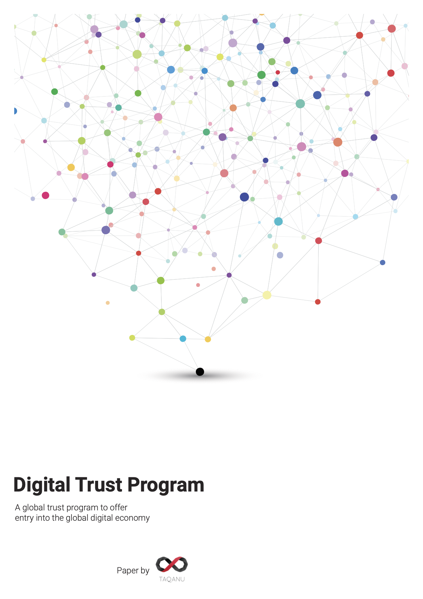

ENABLE ANYONE WITH AN ACCESS TO A SMARTPHONE TO ESTABLISH A TRUSTED DIGITAL ID AND OBTAIN ACCESS TO BASIC BANKING SERVICES.
Digital Trust Program
For over 1.7 billion people lack access to formal financial means. Over the past decades, financial incumbents gathered to unravel financial inclusion; Yet, inclusion remains local, failing to deliver, and is not built to scale. The introduced and heavily enforced set of barriers systematically bar a significant portion of the population from accessing any forms of finance.
The requirement curbing access to finance is primarily centered around the ability to prove someone's identity. The lack or missing credentials left populations exposed to dire limitations in opportunities and the inability for social scaling.
AS PART OF THE LONG-AWAITED MEASURES TO DEVELOP CAPACITIES NEEDED TO DEAL WITH THE INEVITABLE HARDSHIPS OF OUR CIVILIZATION, NOVEL APPROACHES ARE REQUIRED TO PROVIDE THE FRAMEWORKS NECESSARY TO TACKLE ISSUES THAT STEM OUR CULTURE, NOW AND AS A PREEMPTIVE MEASURE, IN THE FUTURE.
The Digital Trust Program is a viable way to offer financial access on a global scale, starting with the most vulnerable.
The introduction of a remotely issued limited digital identity acceptable by the government as a form of identification with a single goal, to offer the receiver recognition for limited financial access. The introduction of the legal framework to enable a financial institution to undertake progressive risk mitigation and global remote onboarding for populations previously barred from - any - systems reusing the newly created digital identities.
The combination of this novel legal framework with technology is unprecedented. Yet, the project already accumulated interest from some of the most significant initiatives working on the problem. At the same time, the solution is complex. It requires political considerations, yet, it offers the toolset to resolve global financial inclusion improving the livelihoods of millions.
The positive, long term impact of the project is escalated by its flexible nature. The adaptability of applying the scheme on a global scale could transform financial access as we know it for the benefit of humanity. The digital, reusable recognition, along with the established self-reliance, beneficiaries will have meaningful ways to interact through both financial and digitally-enabled social means. Organizations gain the ability to simplify their interactions with the beneficiaries while increasing the potential for an interoperable identity framework that can further reduce their workload. While the regulator can benefit from a transparent transaction scheme and risk mitigated customer base.
THE OPPORTUNITY FOR A GOVERNMENT IS TO LEAD THE WAY AS A CHANGE MAKER. TO USE FINANCE AS A TOOL FOR TRANSFORMATION AND THE ENABLER OF HUMANITY AND EQUALITY.